时间商人
当你能用寿命换未来的秘密
第一章 · 交易开始
时间积分：0 ｜ 剩余寿命：38年4个月 ｜ 交易等级：未激活
↓ 向下滑动开始阅读 ↓
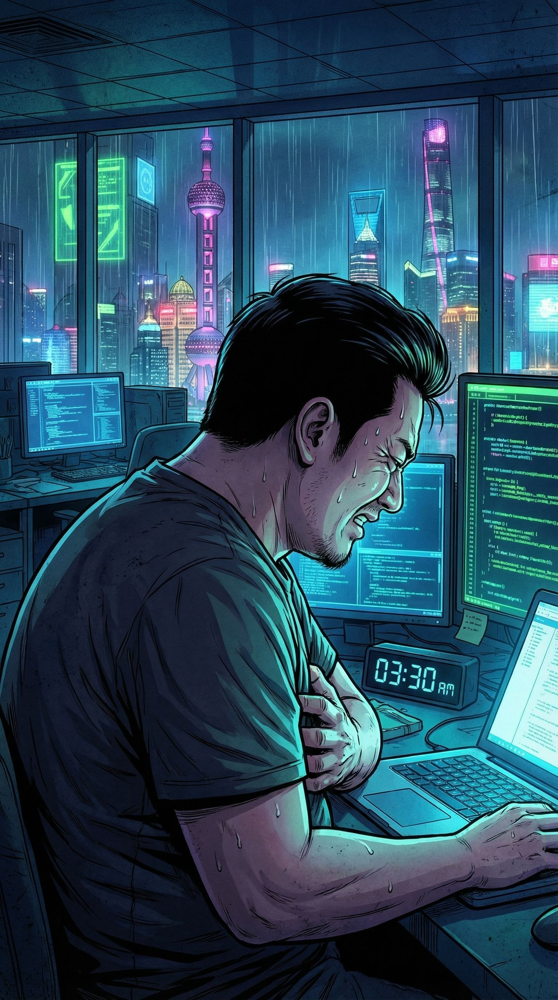
凌晨三点半，我还在review代码。
上海的夜景在落地窗外安静地亮着，像一张永远不关机的屏幕。我已经连续工作了十八个小时，第四杯美式早就凉透了。
然后，胸口突然像被人一拳打穿。
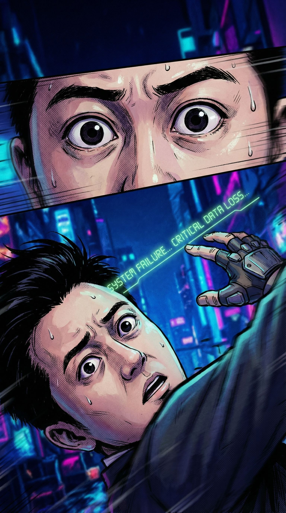
我摔倒在地的瞬间，眼前闪过一行字——
「检测到高价值意识体。是否接入时间交易系统？」
然后，世界黑了。
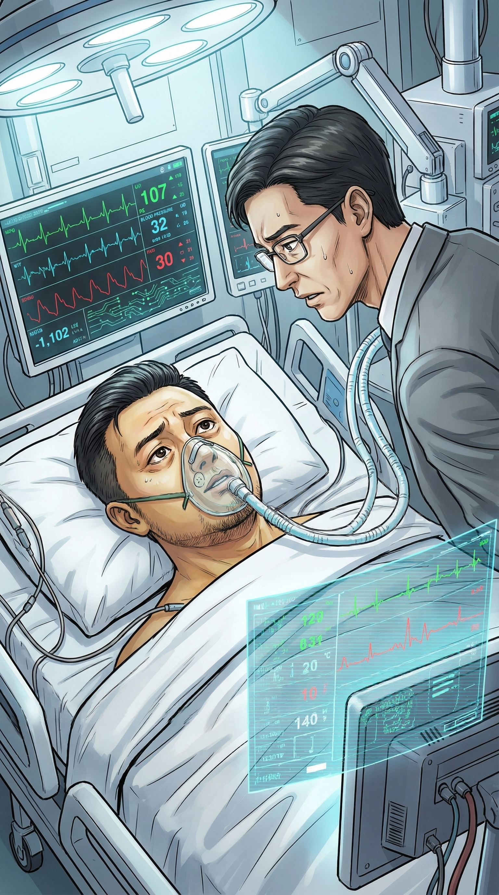
再次睁眼的时候，我躺在ICU里，浑身插满了管子。
何总站在床边，脸色比显示器还白："心脏骤停四分钟，医生说能活过来是奇迹。"
四分钟……我明明看到了什么东西。
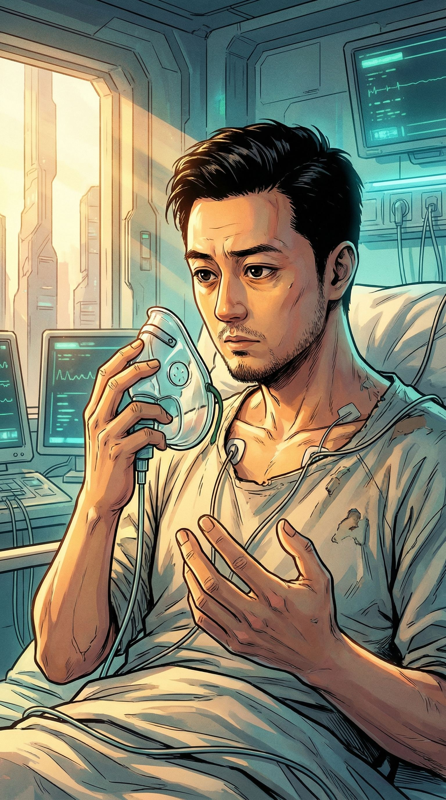
医生让我住院观察一周。我第三天就签了免责声明出来了。
创业者没有住院的权利。我的A轮投资人比医生更着急。
但那行绿色的字，一直在我脑子里转。
出院那天傍晚，我走在陆家嘴的天桥上。
然后我看到了——每个路人的头顶，都浮着一串淡蓝色的数字。像倒计时，又像某种评分。
我没疯吧？
· · ·
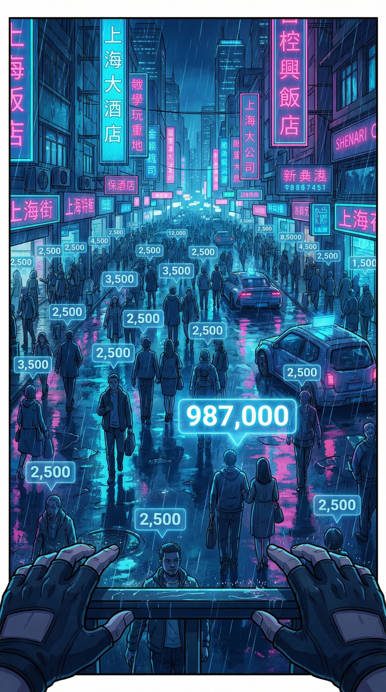
我试着聚焦那些数字——它们是每个人的时间密度值。
有些人头顶的数字很亮，像满电的手机。有些人的数字暗淡得几乎看不见。
这他妈是什么科幻片设定？
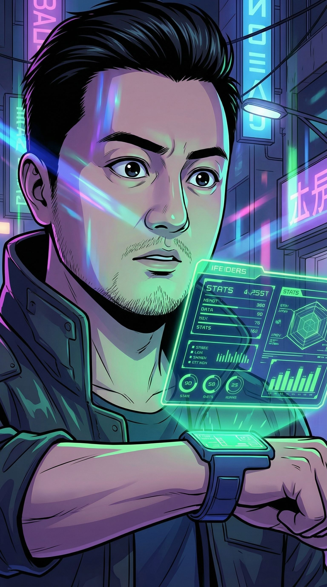
我低头看自己的手——一个半透明的全息面板凭空出现。
时间积分：0 ｜ 可交易额度：0 ｜ 剩余寿命：38年4个月
剩余寿命？这东西还能精确到月？比我的项目排期都准。
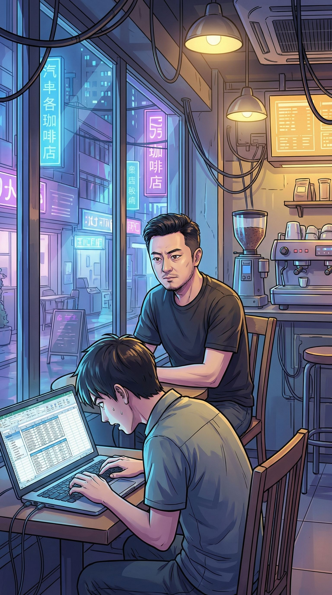
系统说：「完成首笔认知套利即可激活交易功能。」
认知套利？这词倒是很对我的胃口。
我走进一家咖啡馆坐下，用做CEO养成的习惯扫视四周。一个年轻人在对面桌上焦虑地算着什么，笔记本上全是融资模型的数据。
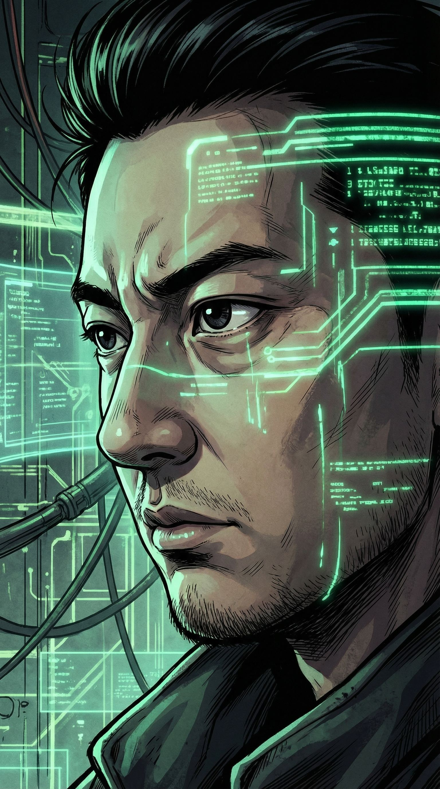
我的大脑像编译器一样自动运转——
TAM用的全市场数据忽悠投资人，但burn rate算错了两个数量级。按这个模型融到钱，三个月内公司必死。
这种错误，我2015年犯过一模一样的。
⟐ 决策点 ⟐
沉默离开，先搞清楚自己的状况
上前指出错误——我不能看着别人掉进我踩过的坑
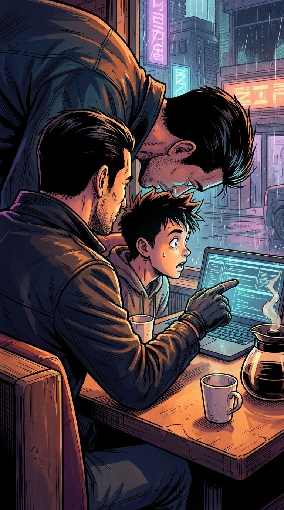
我走过去，三句话指出了他模型里的致命Bug。
"你的burn rate少了两个零。按这个数融钱，三个月烧完，投资人会把你钉在耻辱柱上。"
年轻人震惊地抬头看我，嘴巴张了足足五秒没合上。
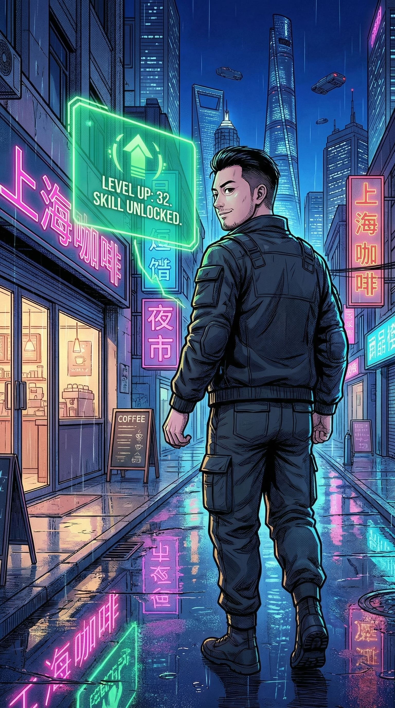
一串全息提示在我眼前闪烁——
「首笔认知套利完成。时间积分+100。交易功能已激活。」
创业路上有人拉过我一把，我才活过来。这个恩，要还的。
只是没想到，帮个忙还能攒积分。早知道我天天去创业咖啡馆坐着。
· · ·
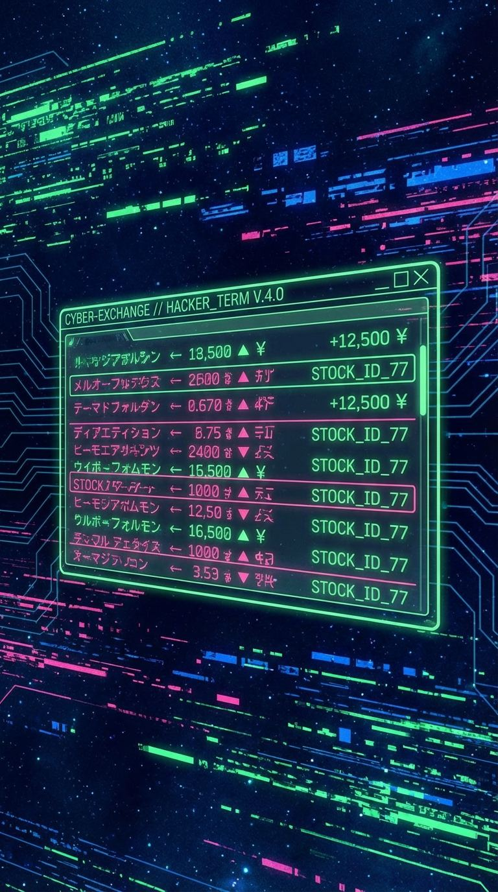
交易界面在我脑海中展开——一个极简的终端，像我见过最优雅的股票交易系统。
一排排信息碎片在滚动，每条都标着价格。最便宜的10积分，最贵的10000积分。
先用最小成本测试系统真实性。这是任何黑客的第一步。
我看到最便宜的一条：10积分——
「明天下午2:17，陆家嘴星巴克。」
莫名其妙。一句话都不完整。
但恰好可以验证——如果明天那个时间那个地点真的发生了什么，就说明系统是真的。
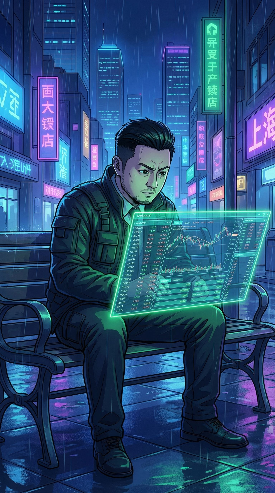
我买了。
手指碰到虚拟按钮的瞬间，一阵冰冷的感觉从指尖蔓延到全身。
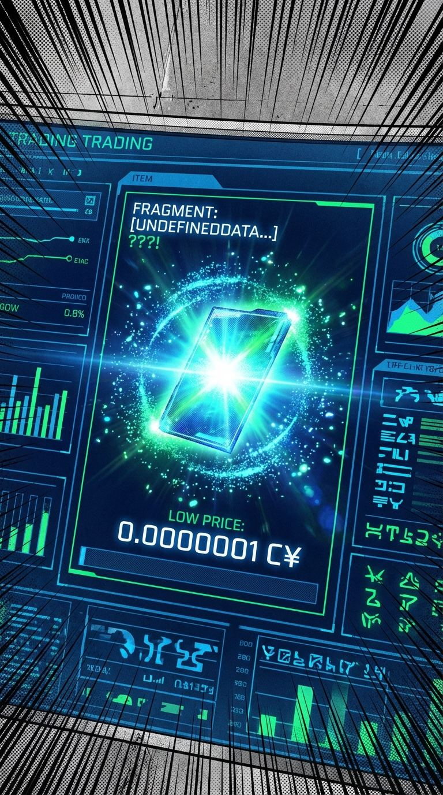
剩余寿命：38年3个月29天
少了一天。
一条信息换一天命？这个汇率……比任何高利贷都黑。
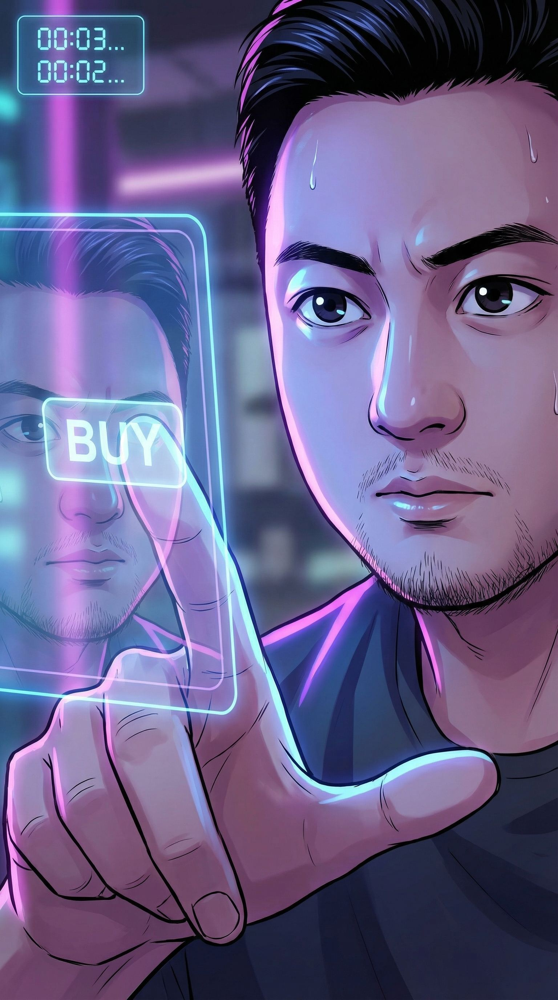
但数字不会骗人。我确实感觉到了什么东西从身体里被抽走——不是疼痛，更像是一种微妙的……空。
行了。明天去验证。如果系统是真的，我只亏了一天。如果是假的……反正我本来就在ICU里多赖了几天。
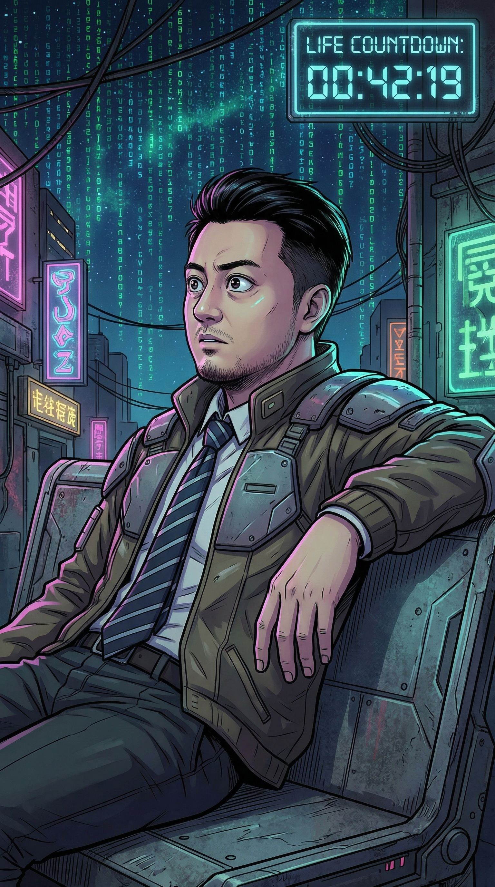
回到家，我躺在沙发上盯着天花板。
窗外的上海夜景像一块巨大的电路板，每一盏灯都是一个运行中的进程。
如果这个系统是真的……它在筛选什么样的人？为什么选中了我？
· · ·
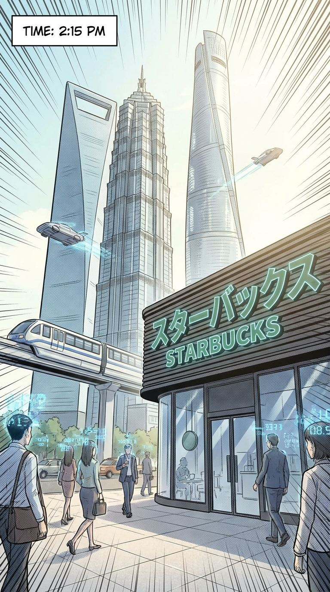
第二天下午两点十五分，我坐在陆家嘴那家星巴克的角落。
点了一杯美式——如果系统是假的，至少赚杯咖啡的清净。
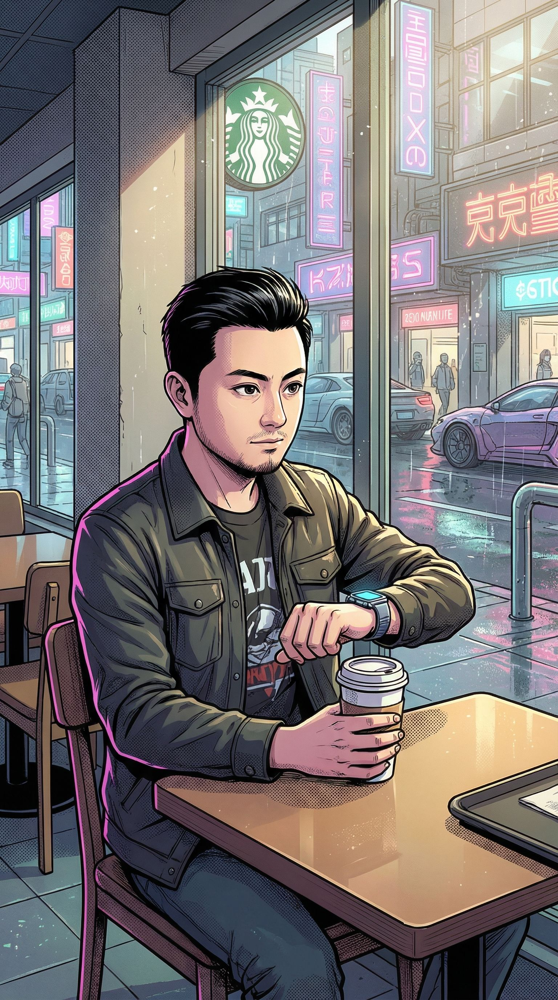
2:16。
我假装看手机，余光扫着门口。心跳不争气地加速。
冷静。你是做过A轮路演的人。一个咖啡馆而已。
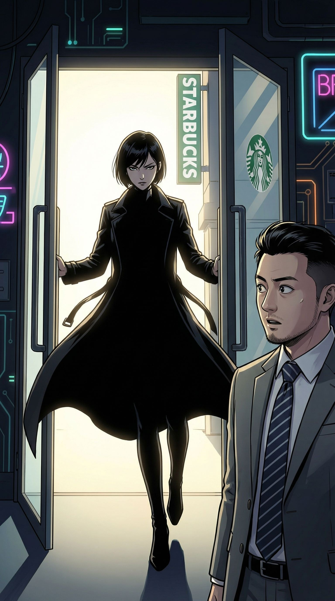
2:17整。
门被推开。一个黑色风衣的女人走了进来——短发利落，眼神锋利得像手术刀。
她没有看别人，径直朝我走过来。
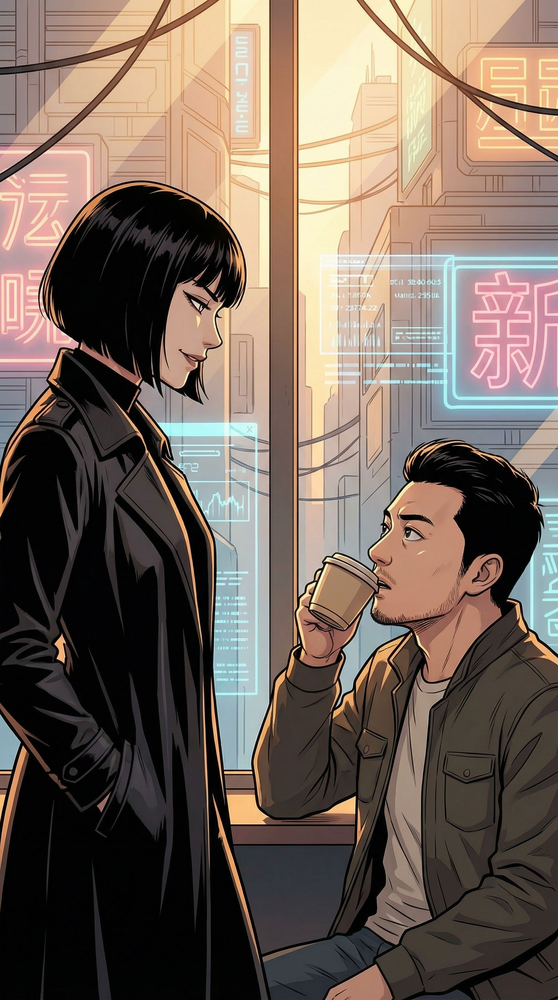
"你是新觉醒的？"
她坐到我对面，像坐进自己的主场。
"买了那条10积分的提示来验证系统？"
我瞳孔一缩。她怎么知道？
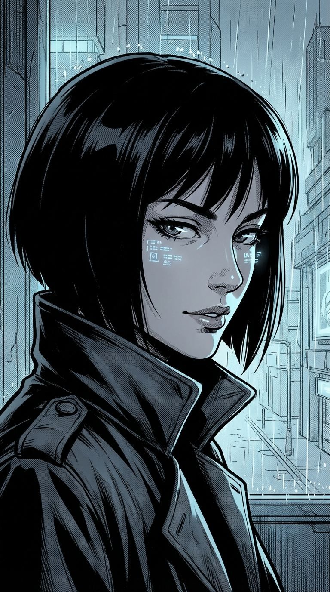
她笑了。不是热情的笑，是看透了新手套路的那种笑。
"因为每个新手的第一笔交易都一样。那条提示——是我挂上去的。"
好家伙。我以为我在测试系统，结果系统里有人在钓鱼。
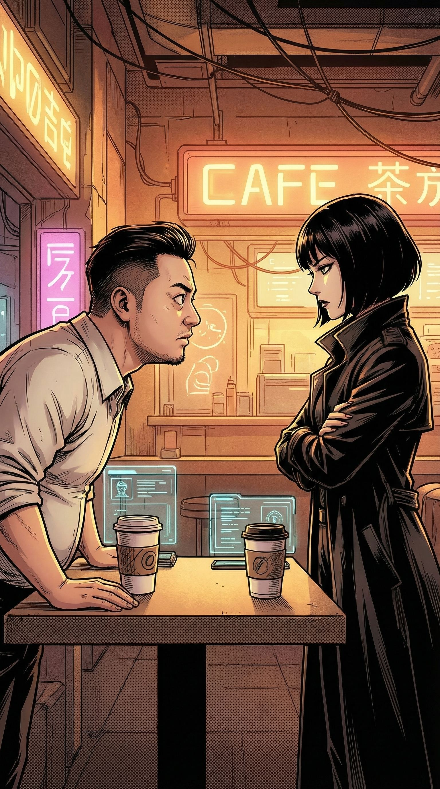
她叫陆薇，觉醒已经三年。用了十分钟给我讲了基本规则：
交易者之间可以合作也可以对抗。信息碎片可以转卖。
但有一条铁律——"永远不要透支寿命交易。"
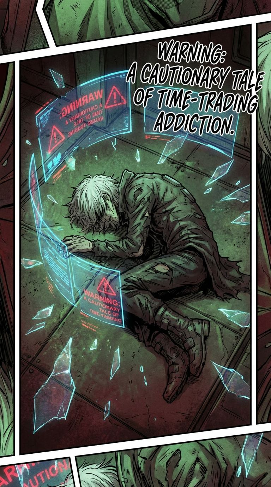
"有个交易者，三十岁，买了太多信息。一夜白头。"
她的语气很平，像在说今天天气不错。
"这个系统不是给你发财的。它在筛选能改变世界的人。做不到的——会被回收。"
回收？什么意思？
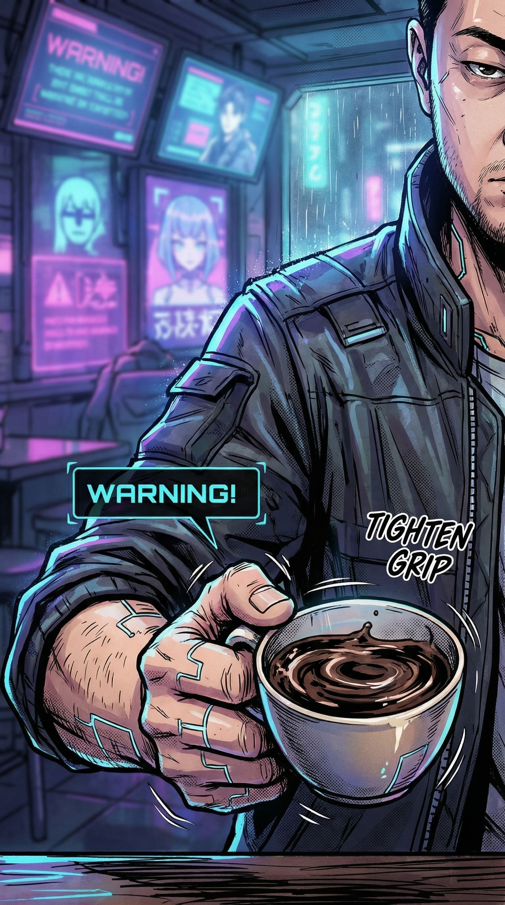
我的手不自觉地握紧了咖啡杯。
改变世界。这四个字我在BP里写了无数遍，但从来没有像现在这样，感觉它是认真的。
认真到要用命来换的那种认真。
⟐ 决策点 ⟐
接受陆薇的"新手引导"，安全但受制于人
独自摸索规则——在不了解底牌之前，不做别人的棋子
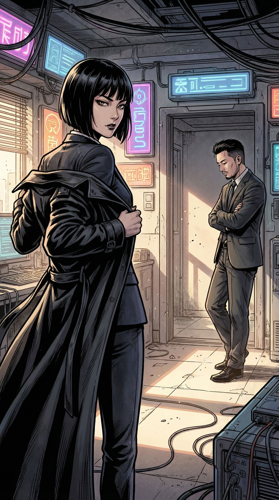
陆薇站起来穿上风衣，回头看了我一眼。
"你会后悔的。新手独自上路，存活率不到三成。"
我笑了："我创业的时候，成功率也不到三成。"
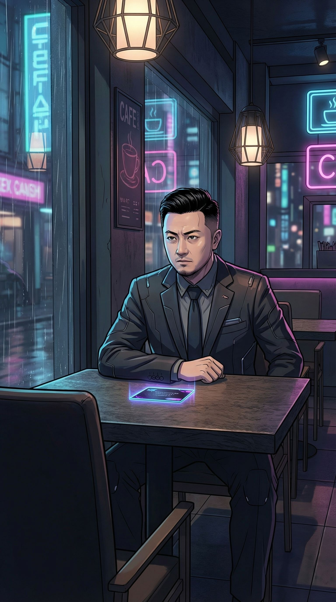
她留了一张名片。带全息边缘的那种。
在不了解对方底牌之前，不要成为别人的棋子。我需要先建立自己的信息网络。
但名片我收了。互利的机会，总会有的。
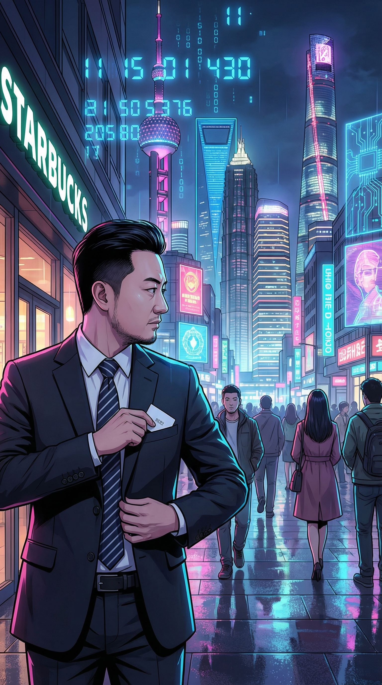
走出星巴克，上海的夜正在醒来。
陆家嘴的霓虹灯一层层亮起来，路人头顶的蓝色数字在夜色中格外清晰。
我把名片放进口袋，大步走进这个我从未见过的世界。
· · ·
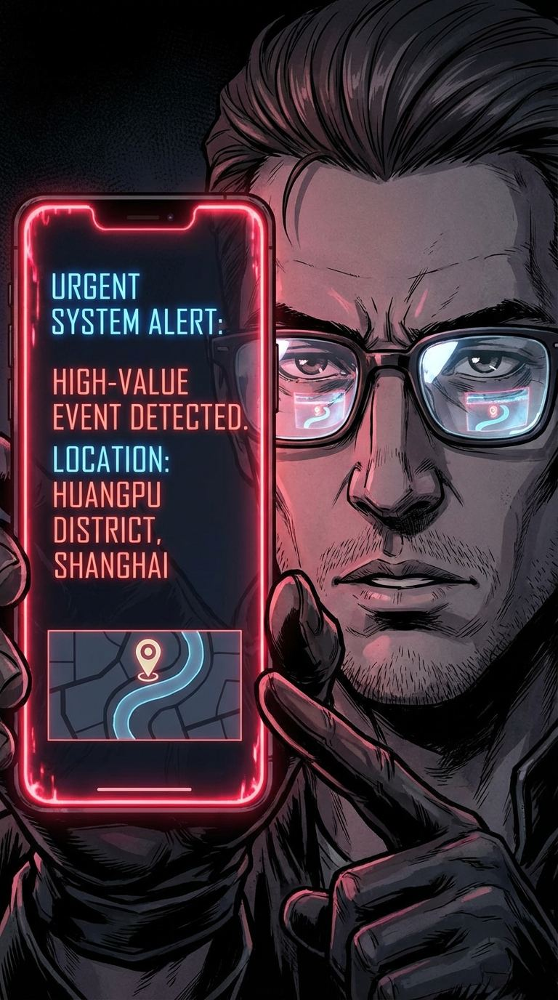
当晚十一点，我收到了系统的第一次主动推送——
「⚠ 高价值事件即将发生。地点：黄浦区。预计积分收益：500-2000」
系统第一次主动推送。这说明事件的级别……非常高。
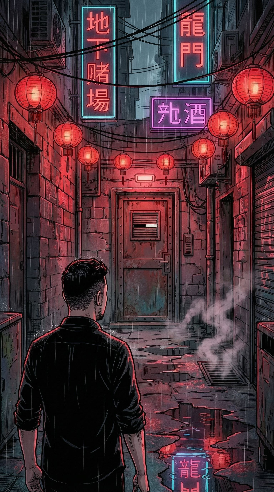
我换了一件黑衬衫，打车去了黄浦区的一条老弄堂。
红灯笼在窄巷尽头摇晃，一扇铁门后面传来隐约的人声。
我一个做AI的创业者，居然要去地下赌场。人生的剧本果然不是自己写的。
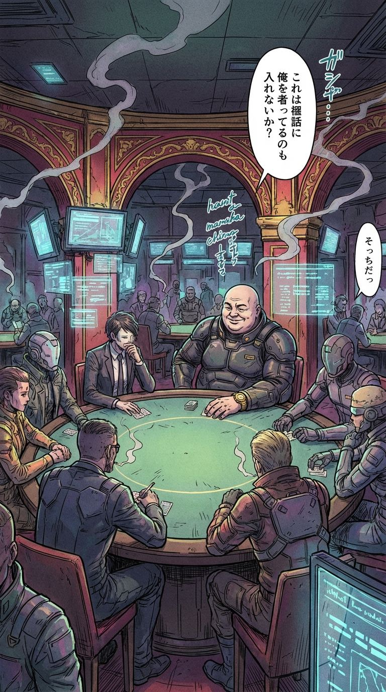
赌场比我想象的高级。绿绒桌、水晶灯、雪茄烟雾缭绕。
坐在主位的是一个胖子——笑面虎，戴金表，一看就是老江湖。
他们叫他老K。
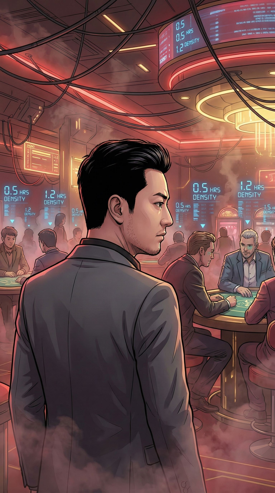
我走进去，下意识扫了一圈。
每个赌客头顶的时间密度值都亮了——大部分人的数字暗淡无光，像快没电的灯泡。
正常。地下赌场嘛，能来的大多是被生活逼到这一步的人。
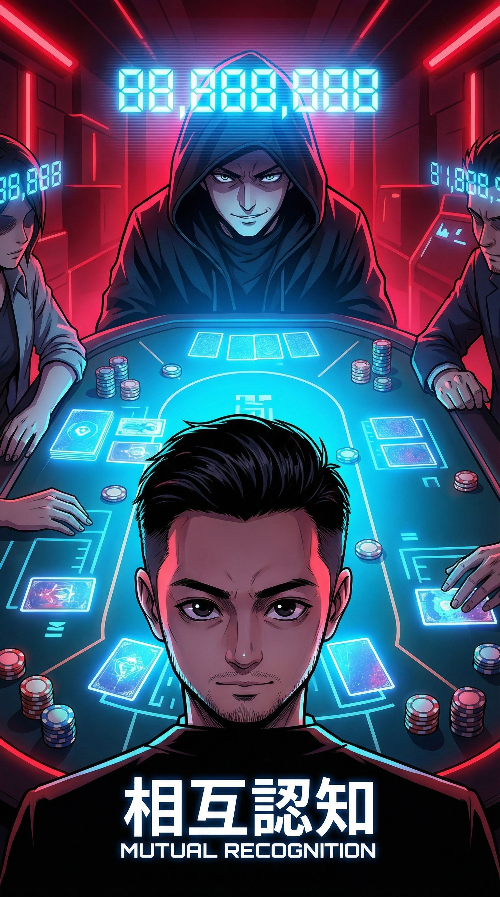
但有一个人——
桌子对面，一个人的时间密度值亮得刺眼。比在场所有人加起来都高。
我看向他。
他也正在看我。
另一个时间交易者。
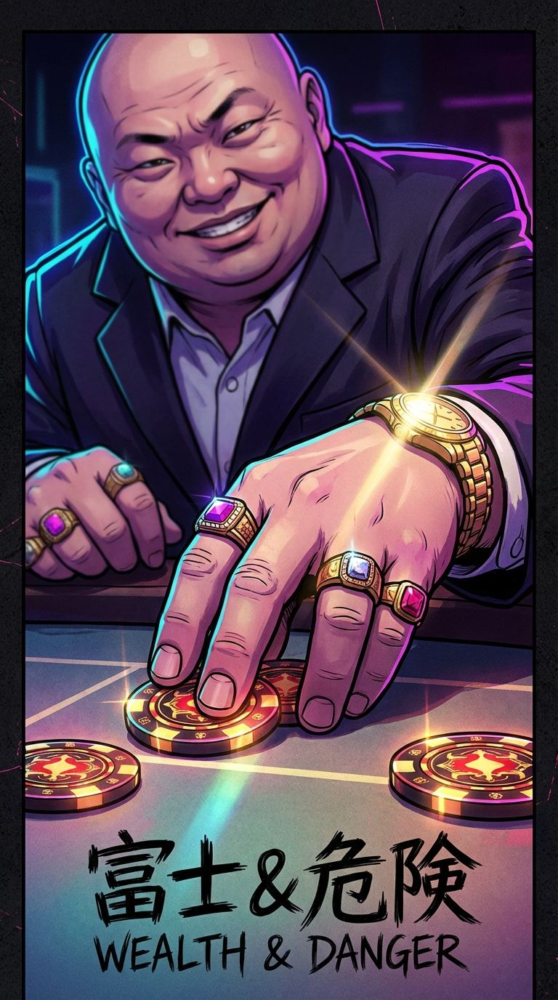
老K拍了拍桌子，宣布今晚的特殊赌局："押注三天后某科技公司的股价走向。每人一百万，三天后开盘验证。"
用赌博的方式做空做多？这不就是没有牌照的期货市场？
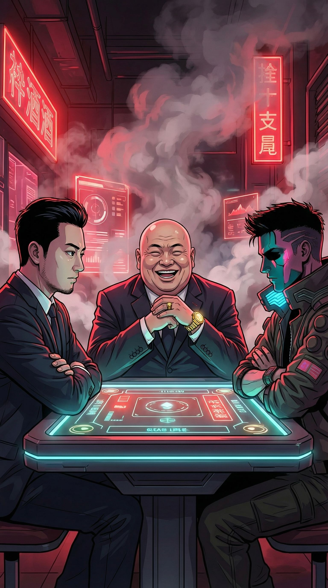
我、那个高密度值的神秘人、还有满脸堆笑的老K。
三个人，三种心思，一张赌桌。
赌场最危险的不是输钱，而是不知道谁在跟你玩不同的游戏。
⟐ 决策点 ⟐
用系统信息碎片获取优势
不用系统，先凭自己的判断下注——观察对手
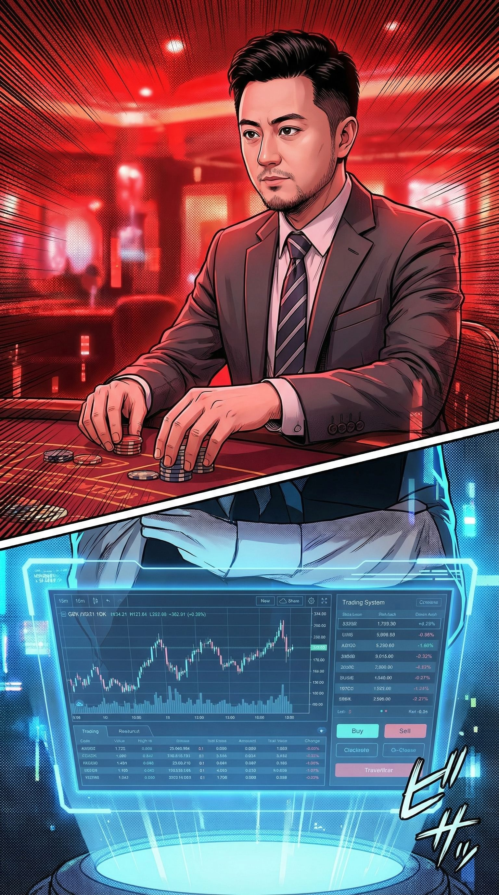
我选择不用系统下注。
凭我做AI行业的认知，那家科技公司的走向我有七成把握。
信息差是武器，但过早使用就暴露了火力配置。先看那个高密度值的家伙怎么操作。
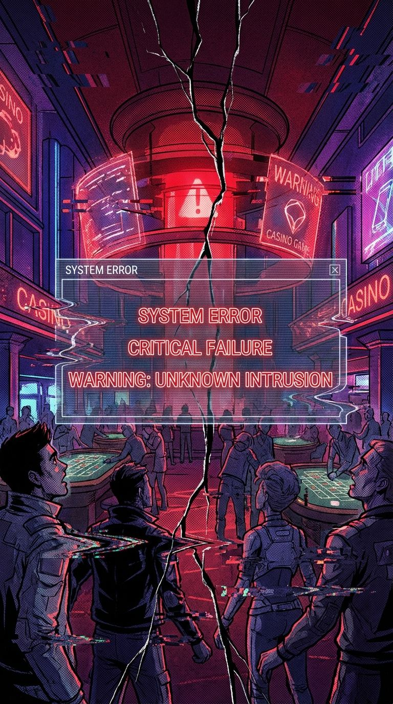
赌局进行到一半——系统界面突然闪了红光。
「⚠ 警告：检测到时间线扭曲。当前事件正在被多个交易者同时干预。」
我的血一下子凉了半截。
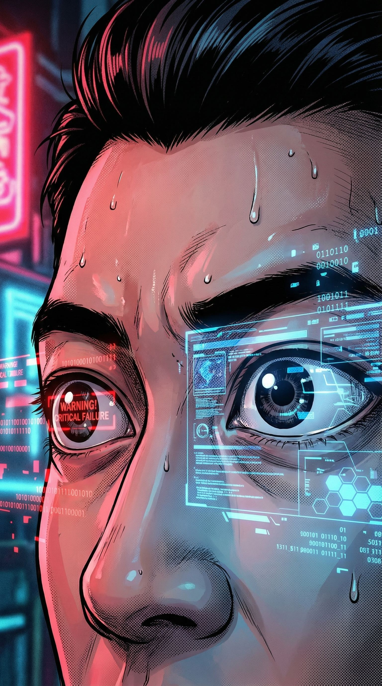
多个交易者同时干预——
这不是普通的赌局。这是时间交易者之间的博弈。
老K的赌桌，只是一个舞台。真正的赌局，在时间线上。
而我，一个昨天才激活系统的新手，坐在了高手对决的中间。
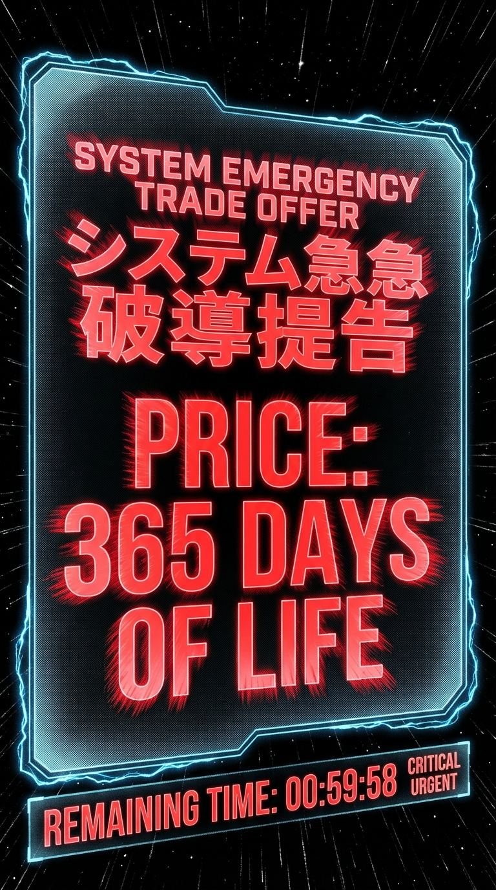
我试图用系统查看更多信息。
屏幕弹出一行红字——
「紧急交易可用：此刻真相。价格：365天寿命。」

365天
剩余寿命：37年3个月29天 → 36年3个月29天
一年的命……
值多少钱？
【第一章完】
第二章预告：赌局揭晓，代价降临